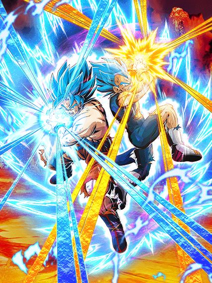

O melhor aniversário.
O sétimo aniversário foi praticamente um reboot em tudo q considerávamos normal no dokkan, introduzindo as red zones como novo conteúdo difícil, as leader skills de 200%, intros nos cards, múltiplas actives, as novas osts de menu feitas só pro aniversário...
Foi facilmente a celebracão mais especial na história do jogo e não tem nem oq dizer, vai ficar marcada pra história.
^ Sumário (clique para ir a qualquer um dos tópicos)
Por que os gods são tão bons? Acho que isso é óbvio.
Além deles terem uma incrível leader skill que engloba os personagens mais fortes do jogo, eles tem ótimas
categorias fazendo com que eles fiquem em times muito bons, mas ai vc me diz: “Ah mas nem só de categoria vive um
personagem.”, beleza, então vamos falar sobre seu kit:
Antes de transformar, os gods tem um stack de ATK e DEF de 20% em seus supers, sendo assim, quanto mais supers vc
der antes de transformar, mais forte eles vão estar quanto transformarem, mas claro se você tiver 5 neurônios vc já
deve saber disso.
Então vamos falar sobre sua passiva: Assim que eles entrarem no turno, vai começar a animação de entrada que é uma
cereja no bolo, então no primeiro turno eles vão ter guarda ativa por 1 turno que é algo muito bom porque como eles
precisam stackar para ficar mais forte, no primeiro turno eles estariam muito frágeis mas com essa guarda ativa eles
se mantêm no primeiro turno.
Eles começam com 120% de ATK e DEF, e ganham 7% de chance de critico por rainbow orb obtida, e o mais incrível é q
eles dão um super ataque adicional garantido quando estão com 20 ou mais de ki, isso é algo muito bom já que eles
stackam, então eles podem acabar dando ate 3 supers no turno fazendo com que eles ganhem 60% de ATK e DEF.
E eles vão ganhar ki +1 por ki sphere obtida e vão ganhar um aumento de ATK e DEF de 77% por 7 turnos desde o
início, então é mais um buff que eles ganham no começo da batalha que é algo muito bom.
E eles ainda ganham ataques efetivos quando estão com 24 de ki e fica muito fácil para eles darem o super adicional
ou pegar o dano efetivo porque eles vão ganhar ki +2 por ki sphere obtida por 7 turnos e depois desses turnos eles
ainda vão ganhar ki +1 por ki sphere.
Eles podem usar a ativa apartir do 4º turno.

Quando você transformar os gods você vai ouvir uma das melhores OST do jogo
Mas deixando o "TRUTRUT PAPAPAPANNNNNPAPAAPNNNNNNNNN" (esse é meu despertador por sinal) de lado vamos falar do seu
novo kit, quando transformados, o ultra super attack vai desabilitar uma ação do inimigo.
Eles ganham 177% de ataque e defesa e vão ganhar ki +2 por ki sphere obtida, chance de critico e chance de desviar
+7% por rainbow orb obtida, ataques efetivos quando estão com 16 ou mais de ki, lança um super adicional quando
estão com 20 ou mais de ki e quanto mais supers, mais dano, então se você stackou bem antes de transformar, esse
card vai dar muito dano.
A active.
Pode ser ativada quando o seu HP ou do inimigo estiver em 50% ou menos, causa ultimate damage ao inimigo e todos os
ataques se tornam críticos.
Então, essa ativa é muito boa para dar muito dano cara, se vc tiver com 1 milhão de ataque que não é algo difícil
(eu to escolhendo um número baixo e se usar a ativa), você vai ganhar um aumento de 550% que vai ser 5.500.000 mais
os 1.000.000 então vc vai dar aí uns 6.500.000 de dano mais todos os seus ataques no turno que vão ser crítico
fazendo com que todos os ataques ganhem um multiplicador de 1,9 então vc vai dar quase o dobro do dano nos seus
ataques, então você vai destruir qualquer boss no turno da sua ativa. - By Dollyinho
Broly STR
Bom, ele não faz nada.
Esse cara é realmente um completo inútil
Literalmente metade do kit dele quer q ele pegue 6 orbs mas ele não é orb changer de NADA, não dá suporte, não tanka, não dá dano, qual era o objetivo desse cara? Pq ajudar os gods que não era.
Tudo bem guys, ele tem uma incrível mecânica de final blow onde ele cura 26% de HP, muito fácil fazer isso com um card q não dá dano, boa sorte :)
OS MAMACOS
Os macacos, vulgo os melhores personagens da categoria gt heroes.
A leader skill deles é a melhor para a categoria de gt heroes e com ela dá pra fazer uns times bem quebrados, são
ótimos parceiros de link skills. O super e ultra deles é bem roubado, deixando eles stackarem um pouco de def e
stackam atk pra caramba.
Na sua passiva temos 77% de atk e def por 7 turnos, 120% de atk e def, chance de crítico aumentada por cada rainbow
orb pega, adicional garantido com mais de 20 de ki, dá dano efetivo em qualquer inimigo se tiver pego mais de 24 de
ki e ganham o dobro de ki por cada orb que você pega.
A partir do 4º turno você pode ativar a fusão, onde tem uma animação incrível e uma linda ost.
A passiva do gogeta é bem quebrada, contando com +177% de ATK e DEF, +2 de ki por orb pega, +7% de chance de reduzir
o dano por cada rainbow orb pega, ataque efetivo em qualquer inimigo, 30% de chance de dar um critico, 50% de dar um
adicional e 50% de chance de counterar um super de inimigo.
Seu super e ultra são as melhores animações do jogo e também aumentam o ATK e DEF por turno.
Por fim temos a sua active skill, que é L I T E R A L M E N T E a melhor animação do jogo inteiro e
a melhor ost, pra ativar ela ou você ou o inimigo tem que estar com menos da metade da vida e quando ativada causa
um dano critico imenso e se o inimigo não morrer ele ainda dá critico garantido pra todos os outro golpes no turno. - By Auã
Syn Shenron TEQ
Gt bosses..?
Não ironicamente esse cara seria bom se o time dele não fosse morto, já q ele tem coisas boas no kit mas ele tá meio q sozinho 💀
Ele se resume a pegar 7 orbs, já que ele só tem 100% de ATK e DEF e vai pegando buffs a cada orb
Resumindo, quando vc pega 7 vc tem 220% de ATK e DEF a mais, 50% de chance de dar um super adicional e 50% de chance de crítico, oq é bem decente e ele tem big bad bosses, uma pena q de novo, gt bosses não tem nem um líder 150% em anos de jogo..
EZA do Gogeta SSJ4 TEQ
No dia q fizerem alguém parecido com esse cara, o dokkan treme.
Um eza simples mas eficaz, o gogeta tem uns números legais ali e tem 50% de ser efetivo contra tudo oq é estranho mas nada de horrível
Ele tem uma mecânica q infelizmente é uma falha q é "buildar" entre bastante aspas 25% de ATK e DEF por super feito até 50%, mas isso dura só 5 turnos oq significa q se vc não pegar um super adicional vc vai basicamente nunca ver a passiva completa do gogeta
Mas tudo se compensa com a simples mecânica mais absurda de todas: 70% DE CHANCE DE COUNTERAR TUDO
Esse cara simplesmente tem 70% de chance de ignorar todos os bosses do jogo, isso é completamente desbalanceado, 70%, mesmo que com suas falhas, é bem alto, esse gogeta praticamente não consegue ser acertado por supers
Uma pena q eles olharam demais o counter e esqueceram do resto do kit..
EZA DO GOKU GOD TEQ
QUE LENDA MEUS AMIGOS, QUE LENDA.
Esse eza carregou o aniversário inteiro, sejamos honestos, a red zone de filmes foi possivel ser feita por causa dele
O kit dele é fácil de explicar: pegue 2 rainbow orb e largue esse cara no slot 1, talvez nem precise dos orb.
Esse cara é orb changer, linka super bem com os gods (sendo o perfeito slot 1 pra eles) e pegando 2 rainbow orb vc ganha 77% de ATK e DEF, mas oq só importa realmente são os 77% DE REDUÇÃO DE DANO contra movie bosses or pure saiyans, que adivinha só, era a red zone movies inteira
Sendo praticamente invencível em tudo lá, o goku god serviu como o slot 1 perfeito, completamente quebrado e tankando tudo sem dificuldade
E eventualmente, esse cara ainda ajudaria na red zone wicked bloodline, na red zone da red ribbon E no evento do cell max, mas lá ele já tava mostrando alguns sinais de falha pq a redução de dano ajuda mas não em cima de uma defesa relativamente baixa
Em resumo esse cara é bem inútil se não estiver com a redução de dano, ele até dá um dano decente mas esse não é o papel dele, então é, ative a redução de dano e seja feliz.
Você chegou ao fim dessa página!
Ou talvez.. eu não tenha terminado ainda? Sei lá
Obrigado por ler tudo, e fica a vontade pra ver outras